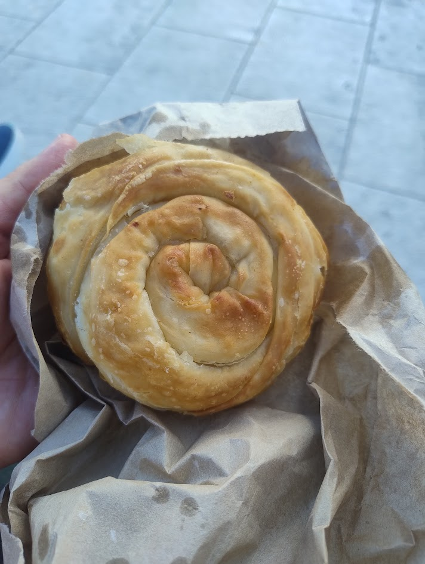
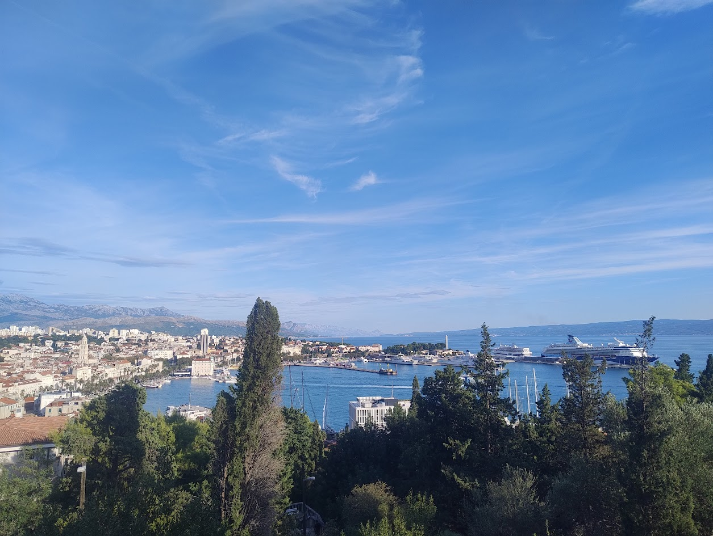
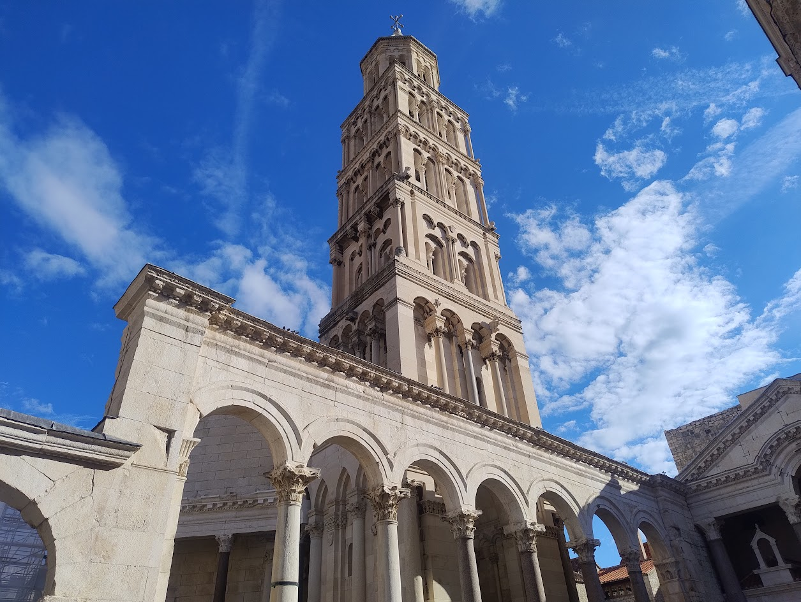
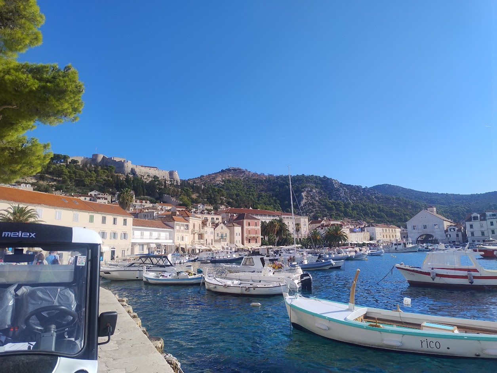
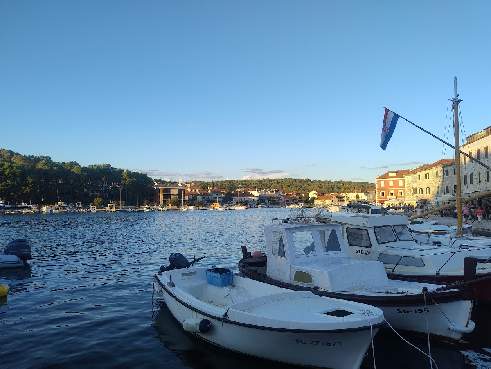
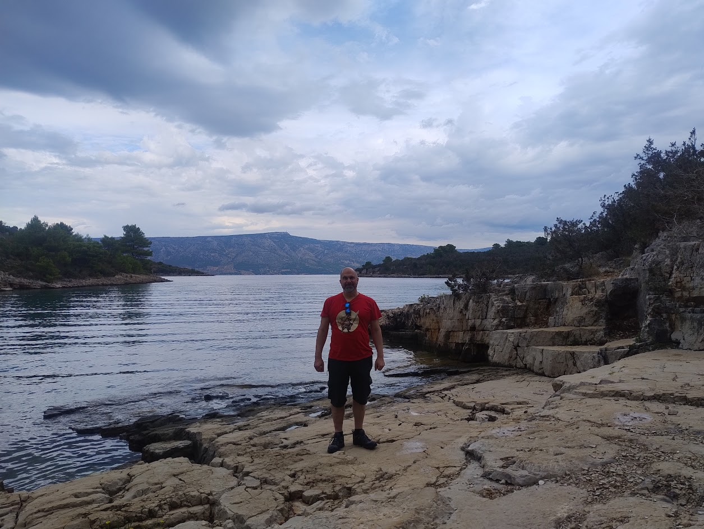
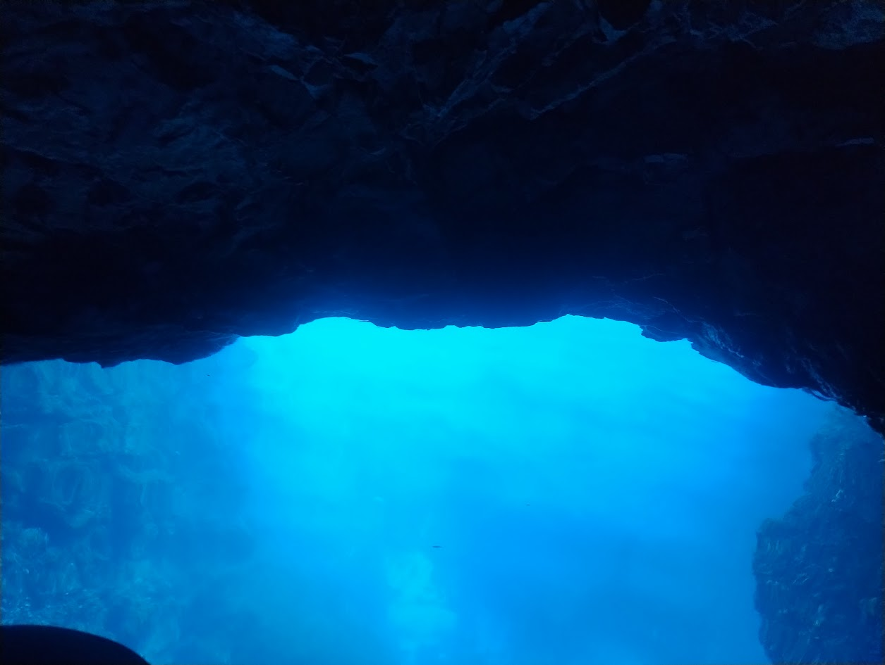
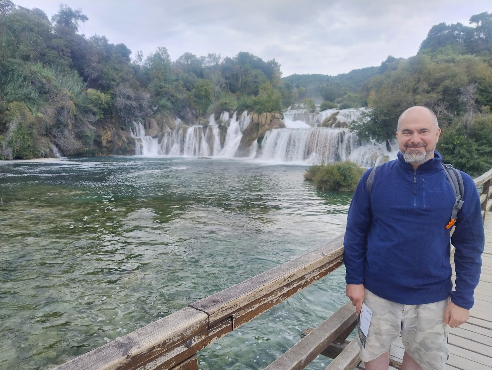

Split - Croatia 2025
Nestled along the sparkling turquoise waters of the Adriatic, Split is Croatia's vibrant second-largest city and a fascinating blend of ancient history and modern Mediterranean life. At the heart of the city lies the UNESCO World Heritage site of Diocletian's Palace, which isn't a museum, but a living, breathing complex that forms the city's old town. Built for the Roman Emperor Diocletian over 1,700 years ago, this massive fortress still houses shops, cafes, and thousands of residents within its ancient walls. Wandering its narrow, labyrinthine streets means stumbling upon Roman peristyles, centuries-old churches, and bustling markets that bring history right to your doorstep.
Beyond the palace, Split offers a captivating coastal experience. You can soak up the sun at the city's popular Bačvice beach, enjoy a leisurely stroll along the palm-lined Riva waterfront promenade, or hike up Marjan Hill for breathtaking panoramic views of the city, islands, and sea. As a major ferry hub, Split is also the perfect gateway for island hopping to gems like Hvar.
Impressions
This time I went with a friend. It was good to go with someone for a change and do things together.
Croatia was somewhere that I was happy to just go with and do whatever there was available to do there.
Eating
There were plenty of restaurants, bakeries and supermarkets.
I didn't have any restaurant meals so can't comment on the prices, but there were lots of takeaway places where you could buy a meal for €10 / €15.
I mainly used the supermarkets to buy food and cook at the apartments which had cooking facilities.
Vegetarian food is possible, but not super easy to find. I dropped the diet and sometimes had meat while I was there. If you're really fussy, it will probably be hard to explain what you want unless you can speak good Korean.
The bakeries were a good choice for getting a small meal to keep me going. They had bureks which were like cheese pies, but you could get meat options as well.
Transport
On arrival, we took the local bus from the airport, it wasn't obvious which side of the road it went from, but figured it out in the end.
They let us pay with Euros, but it seems like you can't always do that. There is an app called Promet which I recommend downloading before you go and add a credit card.
The app lets you put in areas. If you are going from within one area to the other, you have to put in the start are and destination error.
There is an airport shuttle bus which goes direct from the airport to the port. It is an easier option, less than €10
To get to Hvar island we used the ferry which can be booked in advance on the website below.
The journey is very pituresque, you'll pass many islands along the way. The ferry is accessible from the port in the centre, it is easy to find and easy to board.
Accommodation
I booked in advance using booking.com.
I booked apartments which were on average, €100 per night, but you can find cheaper. They had cooking facilities
Money
I took English money with me and exchanged £100 at the airport.
The currency is Euros.
I took cash and used a Revolut card which worked in Supermarkets and a lot of the shops, cafes, ticket vendors, etc., but not ubiquitous. Cash only was sometimes the only option.
Locations
Split
It has attractions such as the old town, Kliss Fortress (nearby), markets and beaches. There is plenty to do.
The central areas are very touristy, but pleasent and have a charm to them. I recommend just walking around the old town and along the costal path which has parks and views of the city.
The beaches are small, but nice, they have some sand and a relaxed vibe to them.
Hvar
Hvar is an island that we went to from Split.
Hvar town is very touristic to an insane level. It is pleasent though and I enjoyed the visit to the fortress which is on a hill. You walk through a botanical garden on the way which has some very nice plants.
There is a bridge which is lit up at night and is really picturesque.
Stari Grad
We stayed in Stari Grad which was a smaller town. It was touristic, but a lot quieter than Hvar town and to me it felt a lot more authentic. Very picturesque.
I'm glad I stayed here because it had amazing walks you could do from the town centre to access nearby villages and beaches. It had a rural feel to it and felt like a real escape. The day we went for a walk to Rudina village and nearby Žukova Beach was the highlight of the trip for me. It was walkable and didn't require own transport.
Blue Cave and Island Tour
From Hvar town we spent the day on a tour which included the green cave, blue cave and nearby islands.
The tour was actually quite pleasant, no shops on the way to places and got to do some snorkeling and visit a variety of locations
The blue cave is the highlight and is quite impressive with the blue light when you go inside it.
Krka National Park
Krka National Park is a beautiful place with many waterfalls.
This can be done as a day trip from split. It is about €20 for the return bus ticket and €20 for entry, but prices change depending on the season.
Busses are reasonably frequent so you can get there and back easily enough. I'd recommend going as early as possible to get the most out of it.
I'd highly recommend this as a day trip. This was one of the highlights of the trip.